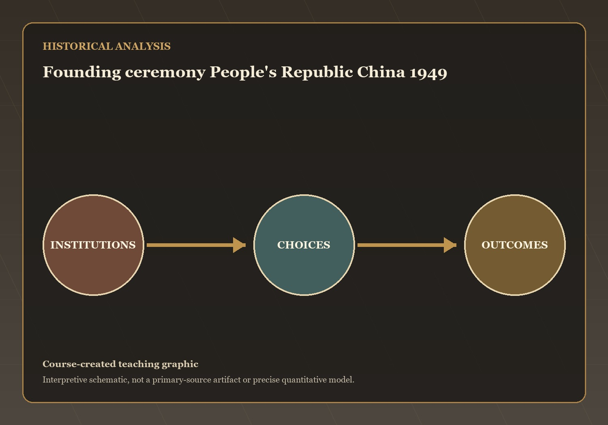
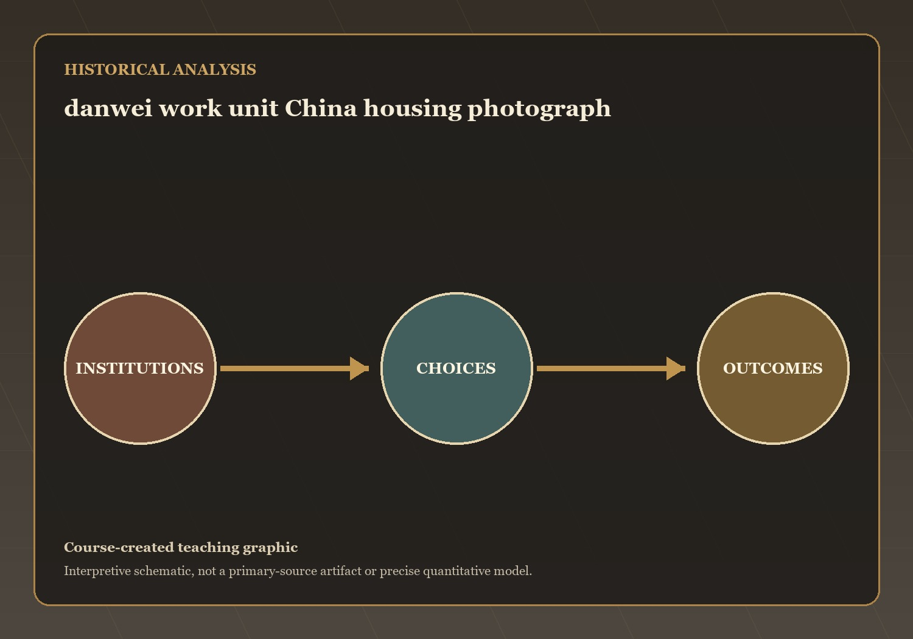
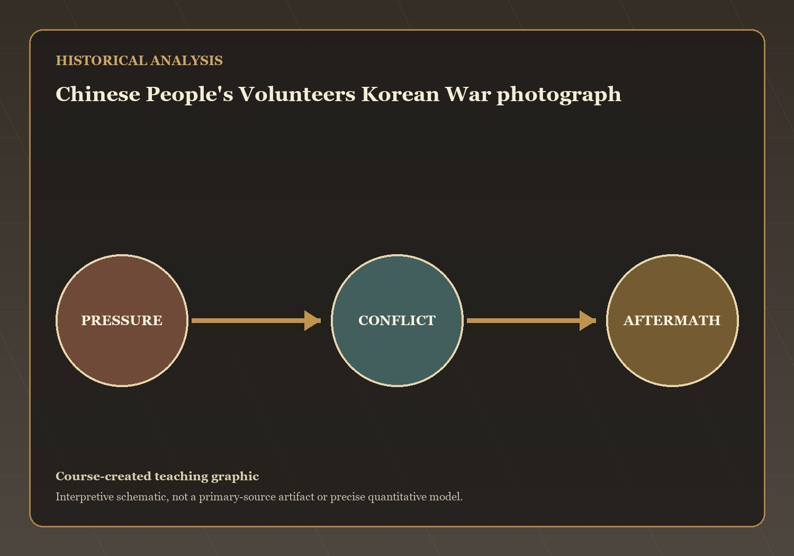
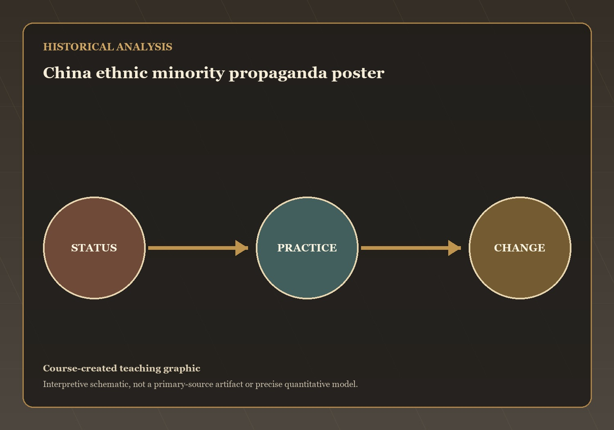

Questions and Problems
Mechanisms and Consequences
This lecture has treated how the CCP consolidated power, reorganized work and family, fought in Korea, collectivized villages, and governed minority regions…
Q1 — evidence, mechanism, and consequence

Visual evidence for Q1
The CCP established a centralized political system modeled partly on the Soviet Union while maintaining Communist Party control over government, the military, and society.…
What mechanism best explains this outcome? State your answer to Q1 as a causal claim.
Q2 — evidence, mechanism, and consequence

Visual evidence for Q2
The danwei system linked employment, housing, healthcare, food rations, and many aspects of personal life directly to the state. At the same time, the…
What mechanism best explains this outcome? State your answer to Q2 as a causal claim.
Q3 — evidence, mechanism, and consequence

Visual evidence for Q3
The Korean War strengthened the legitimacy of the new Communist government by demonstrating China's willingness to challenge powerful foreign opponents. Internationally, it intensified hostility…
What mechanism best explains this outcome? State your answer to Q3 as a causal claim.
Q4 — evidence, mechanism, and consequence
Visual evidence for Q4
Land reform eliminated traditional landlord power and redistributed land to peasants. Collectivization gradually merged individual farms into larger cooperative units controlled by the state
What mechanism best explains this outcome? State your answer to Q4 as a causal claim.
Q5 — evidence, mechanism, and consequence

Visual evidence for Q5
The CCP officially recognized minority nationalities and created autonomous regions intended to preserve local cultures. In practice, increasing Han migration, state control, and political…
What mechanism best explains this outcome? State your answer to Q5 as a causal claim.
The open question: which development in this lecture most changed the range of choices available to ordinary people, and is that change visible in…
Hundred Flowers, the Great Leap, and the Soviet Split — the next stage of the course narrative.
→ / Space: Next | ←: Previous | S: Notes | F: Fullscreen | O: Overview | ESC: Close popup